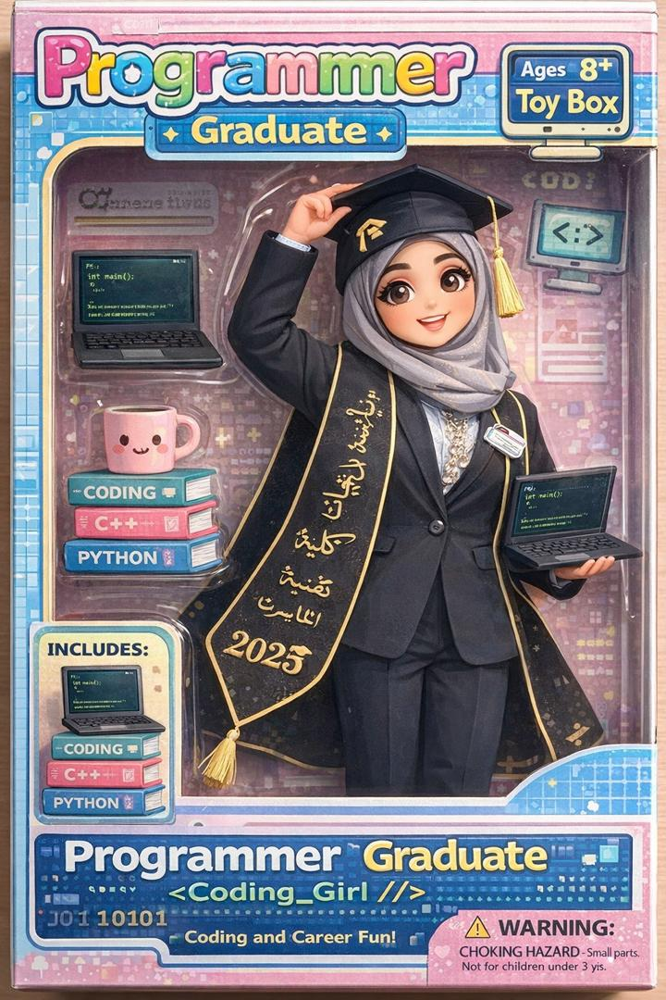

I chose my ICT teacher because she shows me that women belong in technology today, not just in history books.
She is a recent graduate, and that makes her even more inspiring to me, because she proves that dreams can become reality.
She teaches with passion, patience, and kindness, and she makes technology feel exciting and possible for everyone.
When I see her teaching ICT, I see a role model who reminds me that girls can study, learn, and succeed in STEAM.
She inspires me not only with what she knows, but with who she is.
💐 Thank You
Thank you for inspiring me to believe in myself and in my future.
Your passion for technology, your kindness, and your dedication
make a difference every day. You remind me that girls belong in STEAM,
and for that, I am truly grateful.
 Home
Home